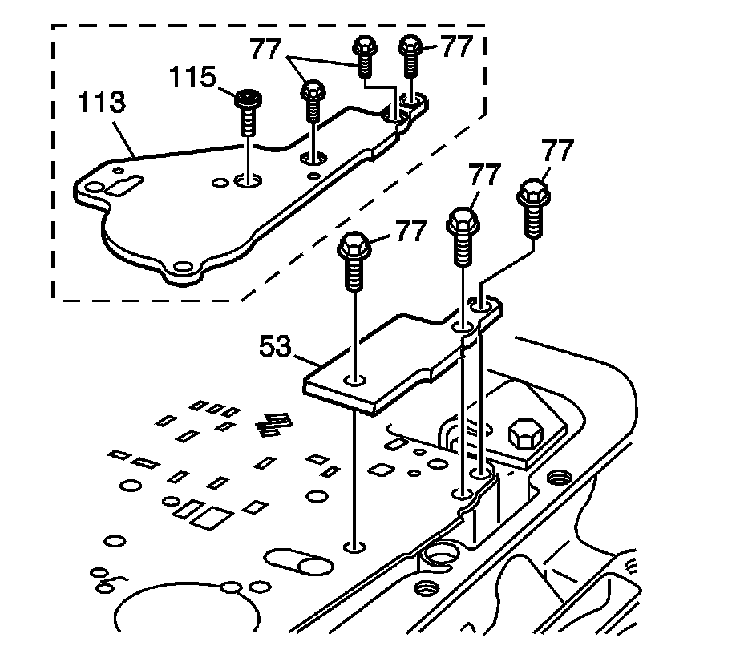

1-2 Accumulator Installation
1-2 Accumulator Installation
Tools Required
^ J 25025-5 Guide Pins
^ J 36850 Transjel Lubricant
1. Inspect the valve body spacer plate and the solenoid screens (49, 50) for damage or debris.
Replace the solenoid screens (49, 50) if necessary.

2. Install the #1 checkball into the case.
3. Install the J 25025-5 into the case.
Important: Some models use a bonded spacer plate (48). Do not reuse the bonded spacer plate. Replace with a NEW bonded spacer plate.
4. Place the spacer plate to case gasket (47) (identified by a "CA") and the spacer plate to valve body gasket (52) (identified by a "VB") on the spacer plate (48). When properly assembled, all identifiers will be visible and will align. Retain gaskets on the spacer plate with J 36850 or equivalent.
5. Place the spacer and the spacer plate gaskets on the case.

6. Install the spacer plate support plate (53 or 113).
7. Install the spacer plate support bolts (77).
Notice: Refer to Fastener Notice.
8. Install the accumulator bolt (115), model dependent.
Tighten the accumulator bolt to 11 N.m (8.11 lb ft).
9. Install the 1-2 accumulator housing assembly (57 or 116).
10. Install the 1-2 accumulator housing bolts (58, 59 or 117, 118).
^ Tighten the bolts 58 and 59 to 11 N.m (8 lb ft).
^ Tighten the bolts 117 and 118 to 8-14 N.m (6-10 lb ft).